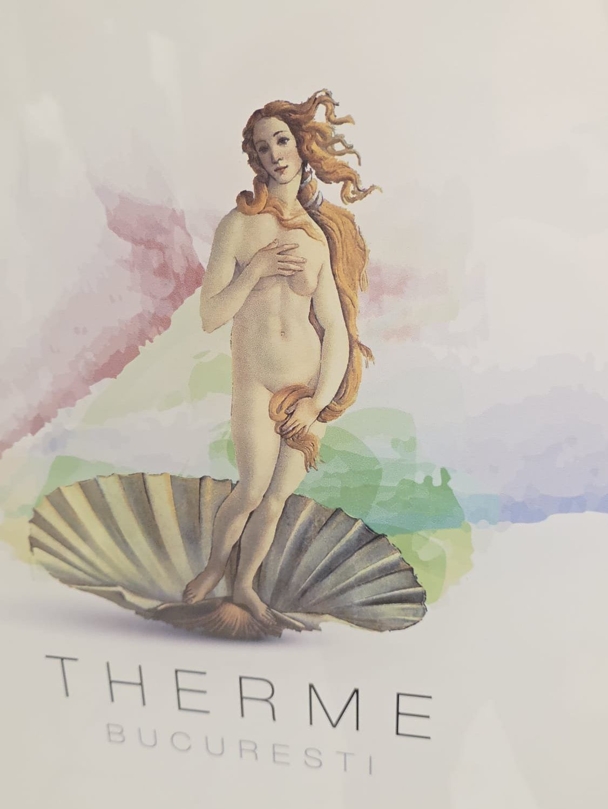
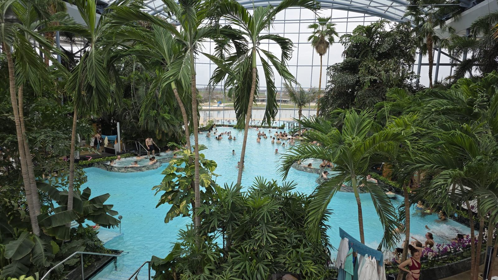
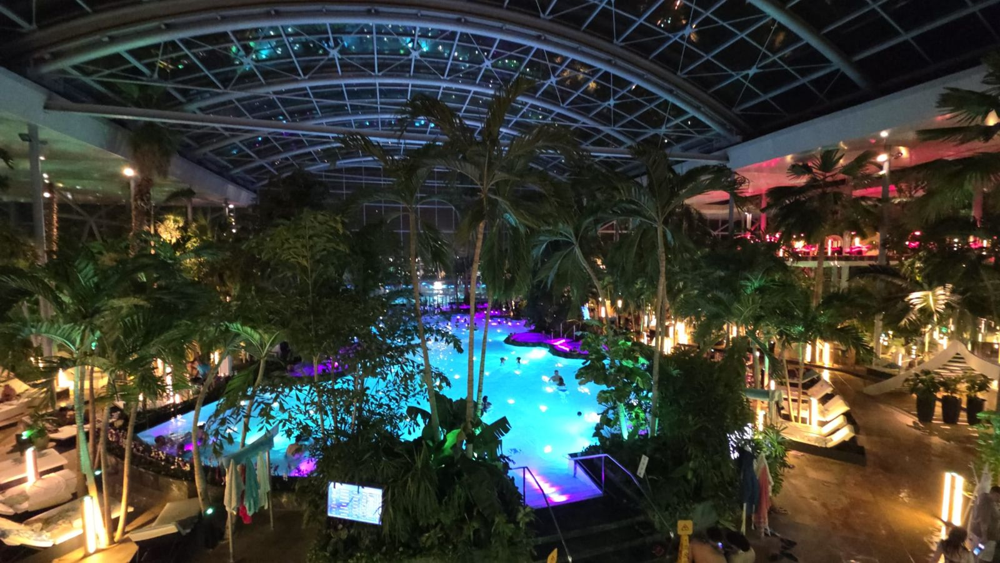
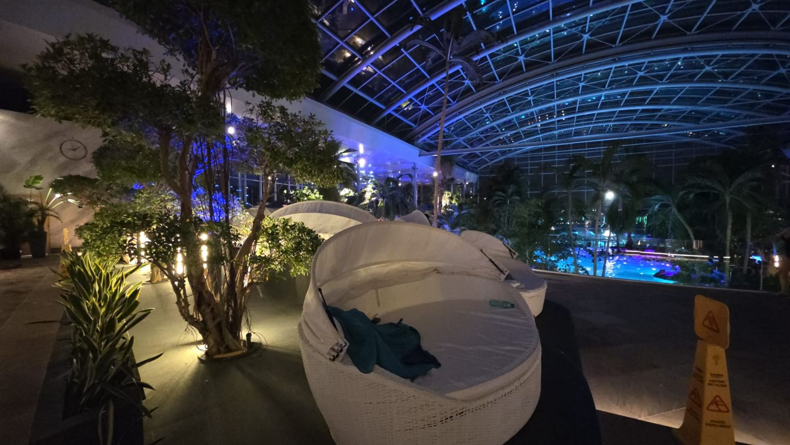
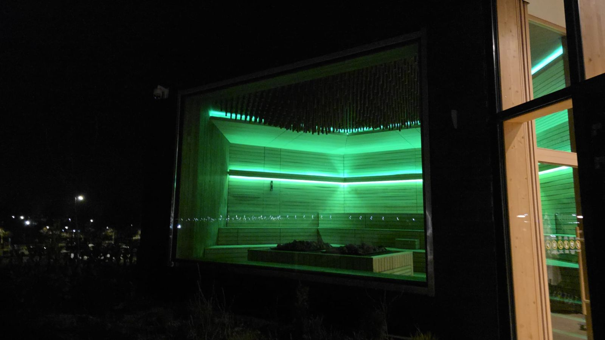
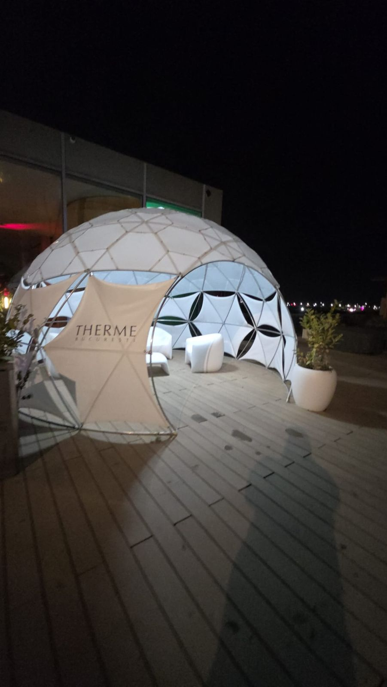
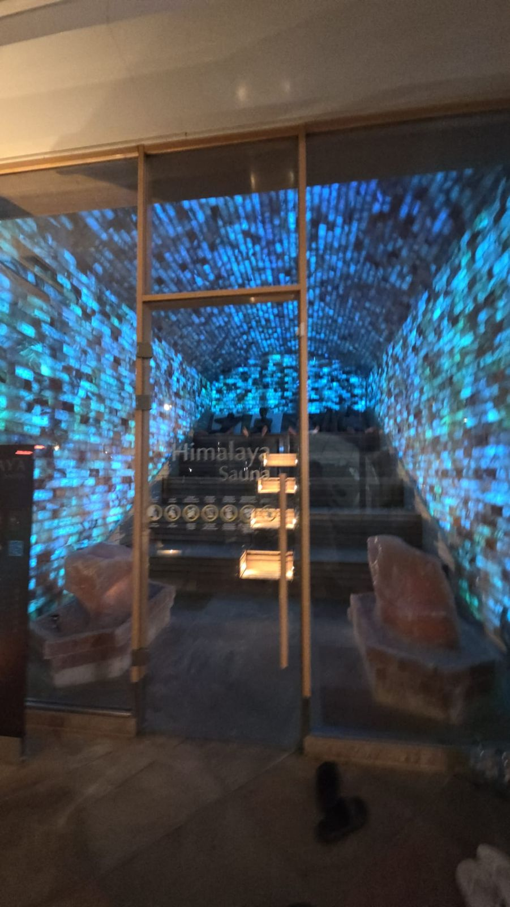
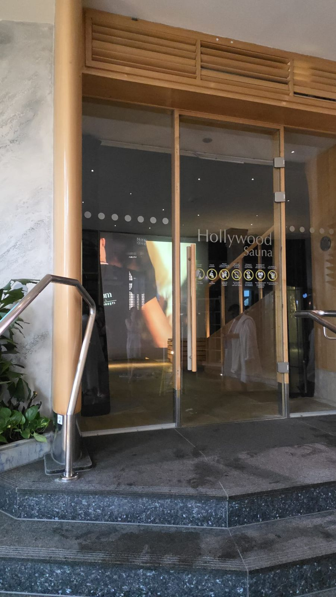
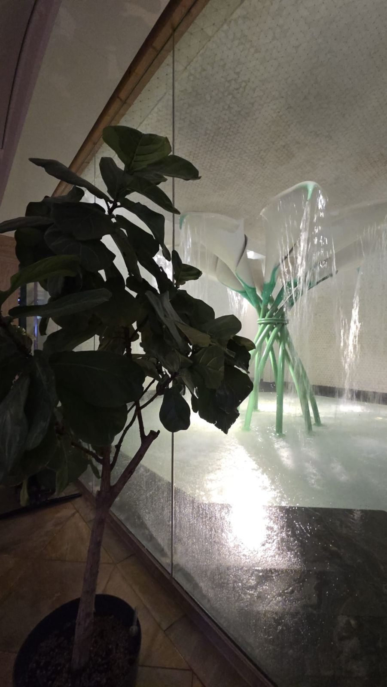

Journey 03 · București Note 5 of 5 Field Note
Time for a spa day!

I love spa days.
I could write about how I chose to spend some time in relaxation and reflection, but I endeavor to write as truthfully as possible and… I just love spa days.
This spa is a major tourist destination in Bucharest, and I was excited to spend the day there. And I do mean day – I arrived at opening and left at closing, spending almost 14 hours at this indoor/outdoor thermal spa and water park.
The spa offers several unique experiences to the spa-goer. There are several optional saunas of various temperatures and materials designed to help you relax. Water cascades from beautiful giant calla lilies. Several pools and hot tubs are spread over the giant facility to enjoy, both indoor and out. Comfortable loungers are available for naps and snacks. In one area there are water slides and wave pools, but my interests aligned closer to red-light beds and facials.






However, there were some unexpected discoveries.
First, the changing rooms were unisex. There were individual changing booths, but it was still a mix of people with different thresholds of modesty. It was unexpected, but easy enough to roll with.

I also discovered a new type of sauna, the Hollywood Sauna. This large sauna offered stadium-style seating, and you could enjoy a near-constant stream of BBC-documentaries while sitting in the heat (60 degree C / 140 F was the advertised temperature). Imagine sitting in a hot sauna with amazing surround sound, listening as David Attenborough describes lizards surviving in the desert or narrates a crane dance.
Turns out, I can spend a long time in a sauna if Planet Earth is playing.
After enough time in the heat, it becomes tempting to cool off under the cascading water from the calla lilies instead of walking back to the main pools.
What I learned, after fully committing to standing under one, is that these are less “gentle spa waterfalls” and more “alpine shock therapy.”
Refreshing? Yes.
Shockingly cold? Also yes.

Throughout the day, different saunas hosted guided experiences. Sometimes aromatherapy, sometimes mud treatments. My first encounter happened in the Hollywood Sauna.
For thirty minutes, instead of BBC nature documentaries, one of the spa employees was in the room. An artistic film played with abstract colors and images. She melted large balls of ice infused with scent, releasing waves of fragrance into the room to match what was on the screen. But more than that… she danced, first with a towel, then later with a giant fan. It moved the scent through the room, as well as the steam and heat, driving up the temperature. It engaged all of the senses – the steam and the smell was thick in the air, music made up of deep resonant tones surrounded me, the colors from the screen melting into the steam and dancing around the room with each swish and twirl of the fans and towels. It was magnificent.
So when I saw an opportunity for another session, this time in the outdoor sauna and with salt scrub added, I knew I had to experience it.
This sauna was the Aegir sauna, and it was much smaller than the Hollywood sauna. From the first moment I entered, it was already noticeably hotter, even with the door open as people come in to claim their own spots.The posted temperature was 70°C (about 160°F), with low humidity and something described as a “microclimate of nebulized Dead Sea salt.” I didn’t know exactly what that meant, but I understood one thing clearly:
It was hot.
The door shut. Our relaxation guide came in, giving the welcome speech and overview of what to expect in Romanian. I caught a few words – hot, ice, salt – but mostly let it wash over me as I began to physically relax. I had already done this, after all. I didn’t need to pay attention.
The first ladle of water was poured over the hot rocks, and small room filled instantly with thick, scalding steam. The towel dancing commenced, but unlike before where the towel created a brief cooling breeze, this dance of the fabric only pushed air that was somehow even hotter than the standing air at us. If you have ever been cooking something for a long time in a hot oven and opened the door to feel the sudden rush of hot air on your face, you’ve got a good idea of what was happening to me in that moment.
The towel thankfully stopped, and our relaxation guide scooped out grey salt for us all – this salt was only for our legs and lower bodies, so I scrubbed the oily salt on my legs and feet. It smelled like a summer forest, and I had a thick salty coat over both legs and a bit in my hair from where the people behind me had dropped some. Then, more steam and towel waving, and I tried to breath through my mouth to cool down the air.
It did not help
Next, we got a different salt, pink this time, to scrub onto our arms and chest. This salt smelled of the ocean, and by the time I had used all the salt heaped upon me, I was coated from neck to toes… and for the first time wondering exactly how I was going to get all this salt off. Was I supposed to just sweat it off? Because I was pouring sweat at this point, more than I think I have ever sweat before. Unfortunately, with my arms, hands, and towel all covered in salt, I could no longer wipe the sweat pouring down my forehead and into my eyes, so I had to settle for closing my eyes and just experiencing the moment. I worked on relaxing, opening my mind and trusting the process. Carefully breathing the scorching air, letting the heat relax me from the inside out.
In retrospect, this was where I went wrong.
You see, with closed eyes, I was not prepared for the next part of this journey of relaxation. So when I was hit with an ice cold stick I was completely unprepared to the shock.
I gasped, eyes opening to see what was happening. And what was happening was that our relaxation guide had (several) buckets of icy water, and rather than pouring this on us to get the salt off (which would have been shock enough), he would dip a leafy birch branch in the freezing water and use it to fling the water and (okay, gently) hit us and shake the leaves around it. Since I was on the first seated row, as each row of people behind me were treated to their own icy branch beating, I was being drenched in more ice water.
It may come as a surprise, but a single birch branch worth of water was not enough to get all the collected salt off of us. So what happened next was a series of aromatic ice balls being melted to release heavy scents into thick, almost scaldingly hot steam, followed by a flapping and snapping towel pushing the impossibly hot air over us, crowned with the icy birch branch water. Sweat and repeat.
Let me just say: being smacked with an ice-cold tree branch while sitting in air that feels one step away from boiling is not, in fact, relaxing. It does not deepen your meditation. It does not enhance your inner peace. The process became of blur of survival for me, as I absolutely refused to be the first person to leave the space. I don’t know how long this went on, but in the end, most of the salt was off my body – though whether from the sweat or the birch branch I will not ever know.
Standing under the alpine waterfalls of the calla lilies after this was no longer shocking. Instead, it was a relief after being ambushed by forestry.
There’s probably a cultural or physiological explanation for what I experienced. Something about circulation, stimulation, contrast therapy… I’m sure there are benefits. Everyone else seemed to know exactly what they had signed up for.
I definitely did not.
But icy birch branches and near-desert heat aside, the experience itself is one I will never forget. And yes, I would still recommend it.
Just… ask more questions than I did.
Originally published at fieldnotesfromabroad.com/2026/04/07/field-notes-time-for-a-spa-day/